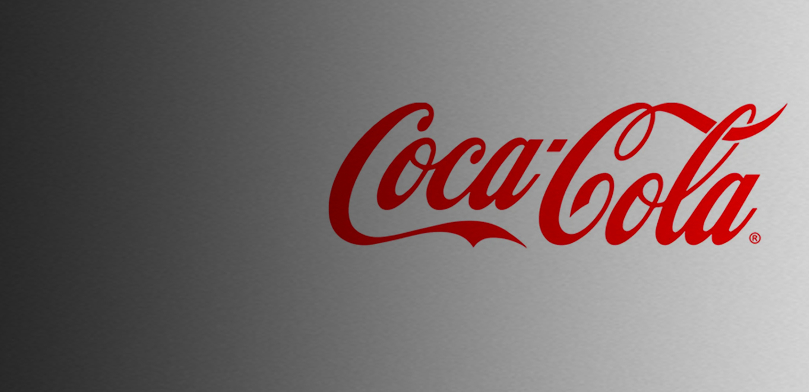
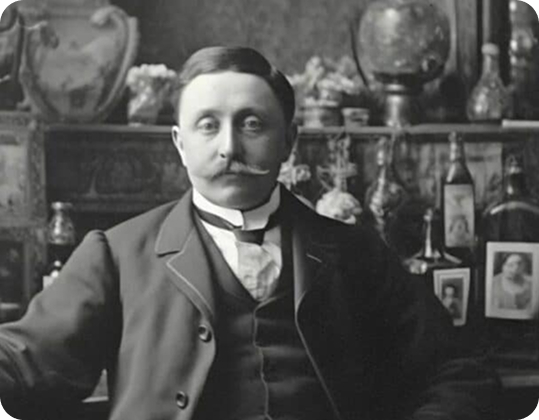
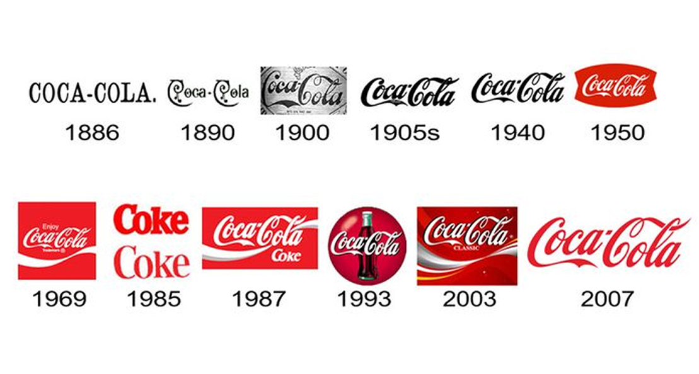
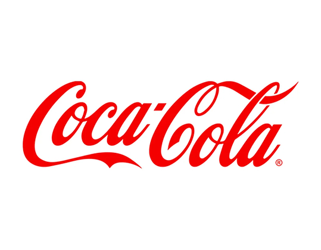

La storia
dell iconico marchio.
La nascita di
un'identità globale.
Fin dai primi anni, il marchio assume quindi un ruolo strategico nella costruzione dell’identità del prodotto. Ad oggi è uno dei marchi più visti, diffusi e ricordati, ovunque si vada.

Frank Mason Robinson.
Con Mr. Robinson...
Il marchio di Coca-Cola nasce nel 1886 grazie a Frank Mason Robinson, contabile di John Stith Pemberton, che non solo inventa il nome ma realizza anche il celebre lettering in corsivo Spencerian. Questa scelta grafica, elegante e diffusa negli Stati Uniti dell’epoca, comunica immediatamente affidabilità, professionalità e qualità, caratteristiche fondamentali per un prodotto inizialmente venduto come tonico in farmacia.
Tra il 1887 e il 1900 si registrano alcune sperimentazioni grafiche, con variazioni nelle curve e versioni più decorative, ma queste vengono presto abbandonate perché meno efficaci. Coca-Cola comprende così molto presto l’importanza della semplicità e della chiarezza visiva.

Si entra nella standardizzazione.
Nel corso della prima metà del Novecento, il marchio entra in una fase di progressiva standardizzazione. Le modifiche diventano sempre più leggere e mirate, con l’obiettivo di rendere il marchio facilmente riproducibile su larga scala, in un contesto di crescente industrializzazione e diffusione del prodotto. In questo periodo si consolida definitivamente l’uso del colore rosso, che diventa un elemento distintivo fondamentale del brand. Il rosso, associato a energia, passione e vitalità, rafforza l’impatto visivo del marchio e contribuisce a renderlo immediatamente riconoscibile. L’unione tra il lettering originale e questo colore crea un sistema visivo coerente, che accompagna Coca-Cola nella sua espansione a livello internazionale.
A partire dagli anni Cinquanta, il marchio viene inserito in contesti comunicativi sempre più complessi, legati allo sviluppo della pubblicità e dei mass media. Per distinguersi visivamente, vengono introdotti nuovi elementi grafici, come il “fishtail marchio”, che incornicia la scritta in una forma dinamica. La vera innovazione arriva però nel 1969 con la “Dynamic Ribbon”, l’onda bianca su sfondo rosso, che aggiunge movimento e modernità senza modificare il lettering originale. Questo equilibrio tra innovazione e continuità consente al marchio di rimanere aggiornato pur mantenendo la propria identità. Tra gli anni Settanta e Novanta, Coca-Cola si afferma definitivamente come brand globale, e il marchio diventa uno dei simboli più riconoscibili al mondo, con variazioni stilistiche limitate a effetti grafici come luci e tridimensionalità.
L’arrivo di un’era digitale..
Con l’arrivo dell’era digitale, il marchio di Coca-Cola subisce un processo di semplificazione, necessario per adattarsi ai nuovi mezzi di comunicazione come siti web, social media e dispositivi mobili. Gli effetti tridimensionali vengono progressivamente eliminati, tornando a un design più pulito e minimale che valorizza gli elementi originari: il lettering e il contrasto tra rosso e bianco.
Questa evoluzione non rappresenta una rottura, ma un ritorno all’essenza del marchio. Il successo di Coca-Cola risiede infatti nella continuità: nel tempo il brand ha saputo evolversi senza mai perdere i suoi tratti distintivi, costruendo un’identità visiva stabile e riconoscibile che attraversa epoche, culture e tecnologie diverse.

Il marchio di Coca-Cola oggi.